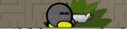
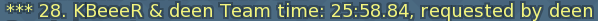
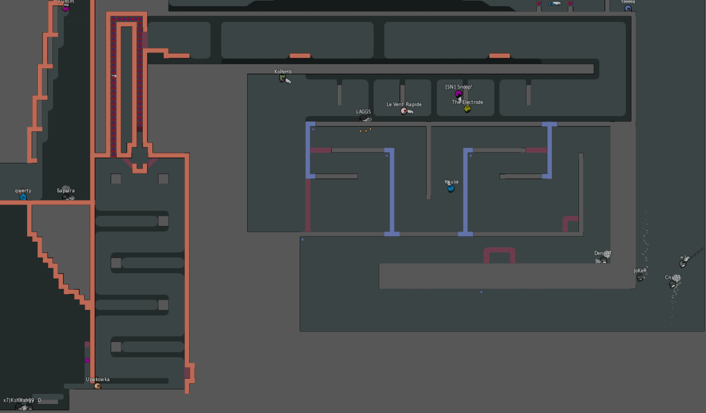

Server Features
- /map to vote a map. For example /map adr3 for Adrenaline 3
The first character has to be the first in the map name, all others following somewhere in that order. In our case the map has to start with 'a' and contain 'd', 'r', and '3' in that order. To leave out the first character use % like this: /map %castle to vote for Out of Castle
- Solo prediction (Thanks to HMH)
- AFK players close their eyes

- 64 player server (initial work by eeeee, get DDNet client to see all)
- /dnd to disable global chat and server messages
- /mapinfo to find out how many points finishing a map will give you
- /lock to lock your team
- Keep conversing with whispers by using /converse (short: /c) or binding it
- /rankteam and /top5team: When you play in a team your team will get a team rank.

- /points and /top5points: Map points
- /whisper (short: /w) with other players
- You can zoom out and still see all players with /showall

- Ninja doesn't work through team and solo anymore
- Clients can't kick people or kill the server by spamming
- AFK players are excluded from votes
- Needs less CPU when noone is connected